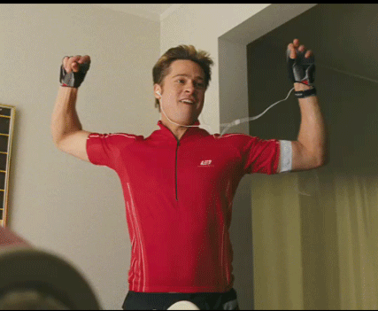
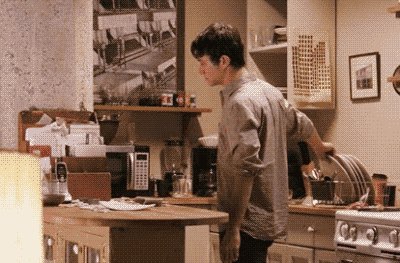
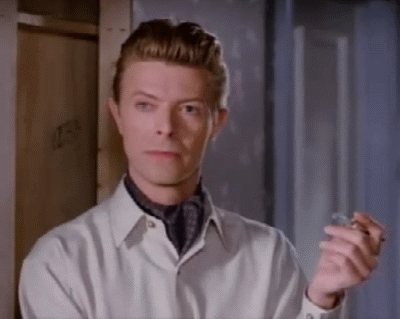

When right after a successful meetup you have a highly motivated team of committed organizers:

When one week before up.front there are no speakers because everyone is sick, travelling or working on six really urgent projects:

When it’s three days before up.front and every one just stopped replying:

When it's one day before up.front and you have to cancel it again:
